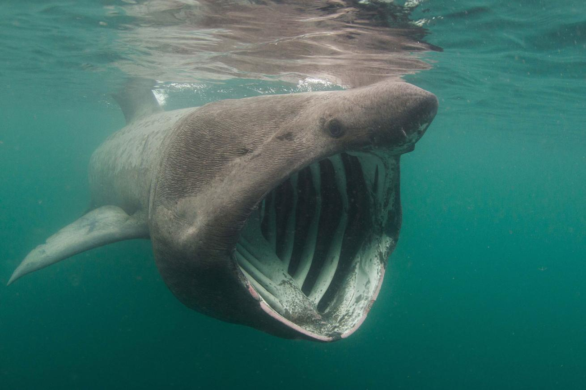

Introduction
Welcome to the World of Big Fish! Dive into the fascinating world of Big Fish, where inspiring creatures of the water come to life. Whether you're captivated by the mystery of the deep or curious about the stories behind the world’s largest aquatic species, this is your ultimate destination for exploration, education, and inspiration. From majestic whales to giant river fish, this website brings you closer to these extraordinary creatures through stunning visuals, intriguing facts, and conservation efforts. Discover how Big Fish play an essential role in their ecosystems and why protecting them is vital for the health of our planet.
Most famous Giant Fish
There's plenty of big fish in the sea. These are the 4 most Popular ones (including honorable mention):
Whale Shark

The whale shark is the largest fish in the world, reaching lengths of up to 12 meters or more. Despite their massive size they primarily consume small fish. Whale sharks can be found in oceans worldwide. Whale sharks are slow swimmers, cruising at around 5 km/h. Fun Fact: Did you know that whale sharks have around 3,000 tiny teeth, but they don’t use them for eating? These teeth are less than 0.2 inches (5 millimeters) long and play no role in their diet. Instead, whale sharks filter their food using specialized gill rakers, letting water flow through while trapping plankton and small prey.
Great White Shark

The great white shark is one of the most iconic predators in the ocean, reaching lengths of up to 6 meters and weighing over 2,268 kilograms. Great whites are carnivorous and feed primarily on marine mammals, such as seals and sea lions, but they also eat fish and carrion. With their torpedo-shaped bodies, serrated teeth, and incredible speed—reaching up to 56 km/h —great whites are highly effective hunters. They play a critical role in marine ecosystems by keeping prey populations balanced and removing weak or sick animals. Fun Fact: Great white sharks can sense a drop of blood from up to 4.8 kilometers away! This incredible sense of smell is part of their acute sensory system —a feature that helps them locate hidden prey.
Basking Shark
The basking shark is the second-largest fish in the world, surpassed only by the whale shark. These enormous creatures can grow up to 12 meters in length and weigh several tons. Despite their intimidating size, basking sharks are harmless to humans. They consume plankton and other tiny organisms by swimming with their massive mouths wide open, filtering up to 2,000 tons of water per hour. Known for their slow and peaceful movements, these sharks often swim close to the surface, giving them their name. Fun Fact: Basking sharks shed their gill rakers—specialized structures used for filtering food—each year and regrow new ones! This annual "replacement" is a unique adaptation that ensures their filtering mechanism remains efficient despite wear and tear from constant feeding.
Honorable Mention: Tiger Shark
The tiger shark is a large and powerful predator, named for the distinctive tiger-like stripes on its body, which fade as the shark matures. These sharks can grow up to 5.5 meters long and weigh over 635 kilograms. Known for their varied diet, tiger sharks are often called the "garbage cans of the sea" because they eat almost anything, even inedible objects like tires and license plates. This adaptability makes them critical to marine ecosystems. Fun Fact: Tiger sharks have one of the strongest jaws among shark species and can crush the shells of sea turtles with ease! Their serrated, curved teeth are perfectly designed for slicing through tough prey, making them one of the ocean’s most formidable predators.